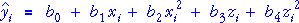
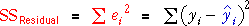

Residuals
For all general linear models, we can find fitted values. For a model with quadratic terms in x and z, the fitted values are:

The residuals are differences between the observed and fitted values,

Visualising the residuals
In simpler models with one or two linear terms (but no quadratic terms), we showed that the residuals could be represented as vertical lines from the data points to the least squares line or plane.
There is a similar representation of the residuals in the quadratic model — the residuals are vertical lines from the data points to the quadratic surface that represents the model.
Squared residuals and least squares
Least squares minimises the sum of squared residuals,

If these squared residuals are represented as squares in the 3-dimensional scatterplot, the least squares line results in the smallest possible total area for these squares.
Illustration
The scatterplot below shows a data set of 7 response values and the corresponding values of two explanatory variables.
Choose Show as lines from the pop-up menu to display the residuals — they are vertical lines from the data points to the regression surface. Rotate the scatterplot a little with the mouse to get a better idea of where the points lie in 3-dimensions, then drag the five red arrows to adjust the parameters of the model, trying to make the residuals small.
Choose Show as squares from the pop-up menu to display each residual as a square. The total area is the residual sum of squares. Try adjusting the parameters again to make the residual sum of squares (the red area) as small as possible.
It is difficult to minimise the residual sum of squares by hand. However a computer can easily perform the matrix calculations to obtain the least squares estimates.
Click Least squares to show the least squares fit of the model.
Leafing-out time of maples
Are there genetic differences between maple trees that grow in different parts of the USA and Canada? The data set below arose from a study in which batches of seeds were collected from maple trees in different parts of the Eastern USA and Canada. All seeds were germinated in Wooster, Ohio and an index of the leafing-out time of the batches was recorded.
Regression is used to examine whether the mean leafing-out time depends on the latitude (X° North - 30) and mean July temperature (Z° F - 60) of the place of origin of the batches of seeds. A relationship would prove that there is a genetic difference between seeds from the different locations. (Note that we have subtracted 30 from each latitude and 60 from each temperature to make the coefficients smaller. The fit of the models is unchanged.)
Use the checkboxes at the right of the diagram to investigate the fit of different linear and nonlinear models to these data. For each model, the least squares fitted model and corresponding residual sum of squares are displayed.
Note that adding an extra term always reduces the residual sum of squares — each extra term gives additional flexibility allowing the surface to get closer to the crosses.
It rarely makes sense to have a quadratic term in x in the model if there is not already a linear term in x, so the diagram does not allow you to remove a linear term without also removing the corresponding quadratic term.